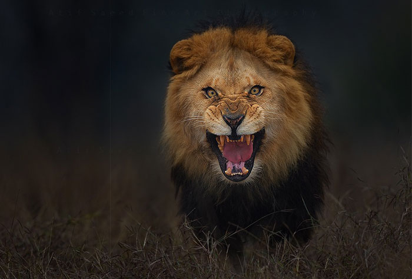

El león (de nombre científico Panthera leo) es un felino carnívoro de gran tamaño. Es originario del África Subsahariana y de ciertas regiones de la India, en donde constituye el mayor depredador de la cadena trófica. Es uno de los animales salvajes más conocidos y temidos por la humanidad, por su fiereza, pero también admirados y representados en símbolos, relatos y esculturas.
Los antepasados de los leones aparecieron hace 4,1 a 5,9 millones de años, y de ellos derivan todas las cuatro especies del género Panthera: el tigre, el jaguar, el león y el leopardo. Estas últimas dos se separaron evolutivamente hace 1,25 millones de años, y surgieron como los conocemos hoy en África hace entre 1 millón y 800.000 años.

La humanidad ha tenido contacto con leones desde tiempos ancestrales, y ha visto en ellos un símbolo de nobleza, ferocidad y masculinidad. Por eso, es común encontrarlos en relatos antiguos, en banderas de países, en escudos familiares e incluso como símbolo de uno de los cuatro evangelios bíblicos.
A pesar de ello y de ser potentes depredadores, los leones se hallan entre las especies vulnerables y susceptibles de extinción. En las últimas décadas sus poblaciones sufrieron un declive de entre un 30 y 50%, haciendo que su vida no sea viable por fuera de las reservas ecológicas delimitadas.
El leon un animal de contrastes
La figura del león despierta respeto, admiración y fascinación en muchas personas, pero también puede producir miedo. En algunos lugares las personas suelen utilizar frases metafóricas que refuerzan las connotaciones negativas sobre este animal, considerado peligroso. ¿Quién no ha escuchado alguna vez que algo es tan peligroso como meterse a una jaula de leones?
Si bien es cierto que estos felinos no son mansos, no significa que sean unos auténticos asesinos de seres humanos. Los casos de ataques han ocurrido en circunstancias específicas como la falta de alimento y la invasión a su hábitat. No son animales que puedan domesticarse, y del mismo modo que toda especie salvaje, necesitan desarrollarse en su ambiente natural.
Tipos de leones extintos
- León Negro
- León de las Cavernas
- León primitivo de las Cavernas
- León Americano